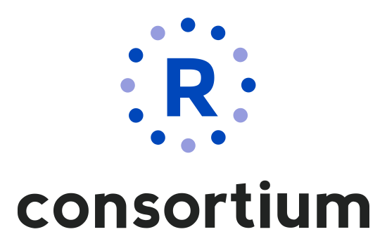
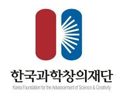
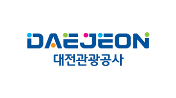
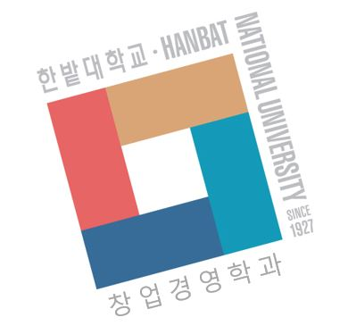

교육
글로벌 R Consortium의 RUGS(R User Group and Small Conference Support) 2022 프로그램 후원을 받아 R 교육 프로그램을 진행합니다.
참여대학과 기관
- 성균관대 (확정)
- 한밭대 (확정)
- 서울대
- 건국대
교육 내용 - Tidyverse Meets Shiny
- 공공데이터 수집
- 데이터 분석
- 대쉬보드 제작
- 대쉬보드 배포
교육 일정 및 신청방법
- 2022년 7월 9일
- 2022년 7월15일
- 2022년 8월19일
신청방법은 Seoul R Meetup 웹사이틀 통해 추후 공지될 예정입니다.
강사
- 비영리법인 한국 R 사용자회 소속 강사
행동강령 (CoC)
한국 R 컨퍼런스 (이하 R 컨퍼런스)는 비영리 개발자를 위해 “R 사용자회”를 비롯한 다양한 R 커뮤니티가 주관하여 진행하는 행사입니다. R 컨퍼런스 주요 취지는 오픈소스 프로그래밍 언어인 R 활용 방법 공유, Tidyverse 패키지 활용 확대, R 이용자간 활발한 소통과 교류 등입니다.
R 컨퍼런스 행동규범은 R 컨퍼런스에 참여하는 모든 참석자와 기관이 준수해야 하는 최소한의 기준과 가치입니다. R 커뮤니티와 참석자는 R 컨퍼런스 행동규범을 지키고, 컨퍼런스 주최자는 행동규범을 적용합니다.
R 컨퍼런스는 행사에 참여하는 R 커뮤니티를 소중하게 여깁니다. R 컨퍼런스는 참석자 모두가 유익한 시간을 보내고, 만족스러운 경험을 쌓고 나누기를 희망합니다. R 컨퍼런스 성과물은 행사 기간 내내 벌어지는 공식, 비공식 모든 활동(예를 들어 행사, 모임, 의견 나눔, 토론 등)에서 다른 분을 존중하고, 예의있게 대해야 생기고 커집니다. 참석자는 행사 기간 동안 다른 참석자에게 존경과 예의를 보여야 합니다.
R 컨퍼런스는 “누구든지 성별, 종교 또는 사회적 신분에 의하여 정치적, 경제적, 사회적, 문화적 생활의 모든 영역에 있어서 차별을 받지 아니한다”는 헌법 제11조를 지킵니다. R 컨퍼런스는 “합리적인 이유 없이 성별, 장애, 나이, 언어, 출신국가, 출신민족, 인종, 국적, 피부색, 출신지역, 용모 등 신체조건, 혼인여부, 임신 또는 출산, 가족 및 가구의 형태와 상황, 종교, 사상 또는 정치적 의견, 형의 효력이 실효된 전과, 성적지향, 성별정체성, 학력, 고용형태, 병력 또는 건강상태, 사회적 신분”에 따라 “특정 개인, 집단, 법인을 분리·구별·제한·배제·거부하거나 불리하게 대우하는 행위”(이하 ‘차별행위’)를 반대합니다.
R 컨퍼런스는 “지위를 이용하거나 업무 등과 관련하여 성적 언동 또는 성적 요구 등으로 상대방에게 성적 굴욕감이나 혐오감을 느끼게 하는 행위”와 상대방이 성적 언동 또는 요구에 대한 불응을 이유로 불이익을 주거나 그에 따르는 것을 조건으로 이익 공여의 의사표시를 하는 행위”(이하 ‘성희롱’)을 거부합니다. R 컨퍼런스는 ‘차별행위’와 ’성희롱’ 예방을 위해 노력을 다합니다. R 컨퍼런스는 ‘차별행위’와 ’성희롱’을 안 시점에 ’차별행위’와 ’성희롱’을 한 참여자에게 중단을 요구하며, 바로 관계 기관에 신고합니다. R 컨퍼런스는 ’차별행위’와 ’성희롱’ 피해자 보호를 위해 노력합니다.
따뜻하고 친목을 도모할 수 있는 행사를 만들수 있도록 도와 준 참석자 여러분에게 감사합니다.
후원
이 프로그램은 과학기술진흥기금 및 복권기금의 재원으로 운영되고,과학기술정보통신부와 한국과학창의재단의 지원을 받아 수행된 성과물로 우리나라의 과학기술 발전과 사회적 가치 증진에 기여하고 있습니다. 성균관대학교 경제학과, 한밭대학교 창업경영학과에서 장소를 지원해 주셨으며, 대전과학문화거점센터 지원도 받았음을 밝혀둡니다.
|  |  |  | |
|  |  |